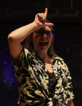

About Me
My name is Lisa Shaffer, I use they/them pronouns, and I'm based in West Chester, PA. I'm a young professional in the web development field looking to grow further in my skills and apply myself to interesting and innovative projects. I think of coding as a fun, puzzle-solving experience!
I'm currently learning to code through the UPenn and Trilogy Full-Stack Flex Bootcamp. At this point in the boot camp, I have developed strong skills in both HTML and CSS. I look forward to advancing in my expertise of these languages, as well as honing my skills in JavaScript to create dynamic and interactive applications.
In my free time, I enjoy playing video games and tabletop games with my friends, going on hikes with my partner, Charley, and playing with our cat, Matthew! I am passionate about LGBTQ+ advocacy and sustainability in the fashion industry. I have a background in environmental biology research, as well as theatre, from my college years. I have experience in acting, directing, stage management, playwriting and improvisational comedy.